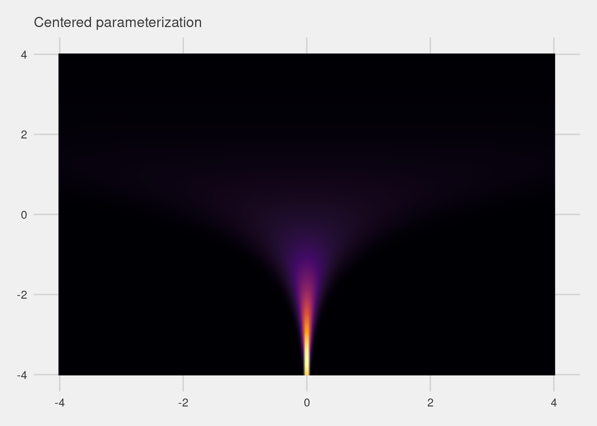
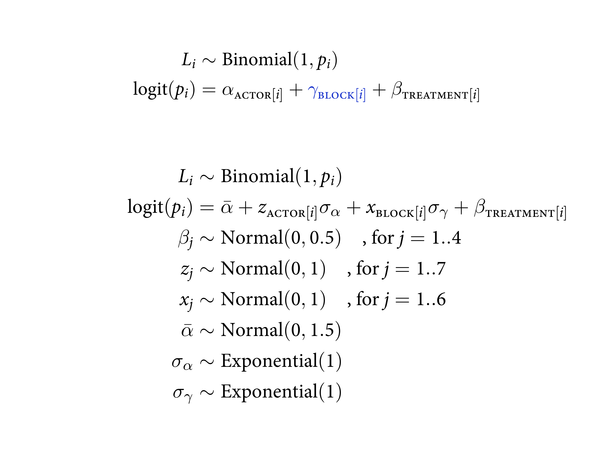

12.4 Divergent transitions and non-centered priors
In a purely mathematical system, the energy is always conserved correctly. It’s just a fact about the physics.
But in a numerical system, it might not be. Sometimes the total energy is not the same at the end as it was at the start. In these cases, the energy is divergent. How can this happen? It tends to happen when the posterior distribution is very steep in some region of parameter space. Steep changes in probability are hard for a discrete physics simulation to follow. When that happens, the algorithm notices by comparing the energy at the start to the energy at the end. When they don’t match, it indicates numerical problems exploring that part of the posterior distribution.
Divergent transitions are rejected. They don’t directly damage your approximation of the posterior distribution. But they do hurt it indirectly, because the region where divergent transitions happen is hard to explore correctly. And even when there aren’t any divergent transitions, distributions with steep regions are hard to explore. The chains will be less efficient. And unfortunately this happens quite often in multilevel models.
There are two easy tricks for reducing the impact of divergent transitions. The first is to tune the simulation so that it doesn’t overshoot the valley wall. This means doing more warmup with a higher target acceptance rate, Stan’s adapt_delta. But for many models, you can never tune the sampler enough to remove the divergent transitions. The second trick is to write the statistical model in a new way, to REPARAMETERIZE it.
![You will get these warnings. Divergent transitions. They are your friend, in the sense that they are telling you something numerically inefficient about ht emodel. Easy to get rid of them. Teaches you someting really important. Even though mathematiclaly equivalent, the Markvov Chain will see them as quite different. Need to swtich between different ways of writing the same model. Gives you advice to increase `adapt_delta`. But sometimes that won't save you, and you just need to re-parameterise the modeo.](slides/L16/13.png)
You will get these warnings. Divergent transitions. They are your friend, in the sense that they are telling you something numerically inefficient about ht emodel. Easy to get rid of them. Teaches you someting really important. Even though mathematiclaly equivalent, the Markvov Chain will see them as quite different. Need to swtich between different ways of writing the same model. Gives you advice to increase adapt_delta. But sometimes that won’t save you, and you just need to re-parameterise the modeo.

Imagine you’re on a frictionless rollercoaster. As it moves from A to D, there are two forms of energy. The energy is in two buckets. Start at A and going to B, it lost potential gravitational energy, and is converted to kinetic energy, to motion. Then as it goes from B to C, that conversion goes the other way. Then C to D, and will do it again. The sum of those two things is constant in a frictionless system.
13.4.1. The Devil’s Funnel
m13.7 <-
ulam(
data = list(N = 1),
alist(
v ~ normal(0, 3),
x ~ normal(0, exp(v))
),
chains = 4
)set.seed(13)
tibble(v = rnorm(1e3, mean = 0, sd = 3)) %>%
mutate(x = rnorm(1e3, mean = 0, sd = exp(v))) %>%
ggplot(aes(x = x)) +
geom_histogram(binwidth = 1, fill = "orange2") +
annotate(geom = "text",
x = -100, y = 490, hjust = 0,
label = expression(italic(v)%~%Normal(0, 3))) +
annotate(geom = "text",
x = -100, y = 440, hjust = 0,
label = expression(italic(x)%~%Normal(0, exp(italic(v))))) +
coord_cartesian(xlim = c(-100, 100)) +
scale_y_continuous(breaks = NULL)## Warning in is.na(x): is.na() applied to non-(list or vector) of type
## 'expression'
## Warning in is.na(x): is.na() applied to non-(list or vector) of type
## 'expression'
# define the parameter space
parameter_space <- seq(from = -4, to = 4, length.out = 200)
# simulate
crossing(v = parameter_space,
x = parameter_space) %>%
mutate(likelihood_v = dnorm(v, mean = 0, sd = 3),
likelihood_x = dnorm(x, mean = 0, sd = exp(v))) %>%
mutate(joint_likelihood = likelihood_v * likelihood_x) %>%
# plot!
ggplot(aes(x = x, y = v, fill = joint_likelihood)) +
geom_raster(interpolate = T) +
scale_fill_viridis_c(option = "B") +
labs(subtitle = "Centered parameterization") +
theme(legend.position = "none")
![Divergent transitions are when your rollercoaster pops off the track. In Hamiltonian dynamics, it is the total energy in the system. If energy isn't conserved in the chain, something is wrong. We have little steps, we calculate the gradient, find a step, and get a piecewise approximation. When the rollercoaster track bends really violently, or the stepsize is big, it can happen. Divergent means it pops off the true surface. On the right is a posterior distribution that tends towards divergent transitions. It happens when you have parameters that is conditional on other parameters. Gibbs and Metropolis experience the same thing, but don't tell you when it's happening. Hamiltonian just works better especially in high dimensions, but also gives you diagnostic information.](slides/L16/15.png)
Divergent transitions are when your rollercoaster pops off the track. In Hamiltonian dynamics, it is the total energy in the system. If energy isn’t conserved in the chain, something is wrong. We have little steps, we calculate the gradient, find a step, and get a piecewise approximation. When the rollercoaster track bends really violently, or the stepsize is big, it can happen. Divergent means it pops off the true surface. On the right is a posterior distribution that tends towards divergent transitions. It happens when you have parameters that is conditional on other parameters. Gibbs and Metropolis experience the same thing, but don’t tell you when it’s happening. Hamiltonian just works better especially in high dimensions, but also gives you diagnostic information.
![This is a routine situation where you get divergent transitions. Arises often in the funnel. Turn it on its side. Very simple posterior with two parameters, $v$ and $x$. $x$ is conditional on $v$. When this is true you can get very interesting shapes. As $v$ gets small, $x$ contracts and you get a very narrow valley. Curvature is really tight there. Out in the big plane you can take big steps. But out in the valley, there's no single step size that can efficiently explore both. You want a bigger one int he open area, and a smaller one in the tight area.](slides/L16/16.png)
This is a routine situation where you get divergent transitions. Arises often in the funnel. Turn it on its side. Very simple posterior with two parameters, \(v\) and \(x\). \(x\) is conditional on \(v\). When this is true you can get very interesting shapes. As \(v\) gets small, \(x\) contracts and you get a very narrow valley. Curvature is really tight there. Out in the big plane you can take big steps. But out in the valley, there’s no single step size that can efficiently explore both. You want a bigger one int he open area, and a smaller one in the tight area.
When energy at the start is different form the energy at the end, that’s divergent. This doesn’t necessarily corrupt your chain, but it’s less efficient. The places where you do the rejections are particular regions of the posterior, and you won’t be sampling that area of it. We can also make the step size small, but spend your time missing your funnel completely. Stan will do better than this, but as you increase the dimensionality, it gets pathological. So what do we do?
The first mean you could spend a long time finding the funnel. Also makes the chain run slower. Second is to re-parameterize. When the chain is inefficient, it’s usually because I did something stupid, like leave out a prior.
It’s a wonderful fact that any statistical model can be expressed in a few identical ways. Alpha is conditional on mu and sigma.

Alpha has some probability distribution. This is another way to do it. Now alpha has the same distribution of alpha at the top, just took mu out and then added it back later.

We can go one step further and get \(z\). When we multiply the zs by sigma, we’re back on the scale. And add mu back in and we’re in the same place.
Why do this? Even though it’s mathematically the same, the geometry is different. On the left we have the default (centered) form. There are parameters inside the distribution. Non-centered is wehre we take all the conditioniing out. Let’s look at the geometry of these equivalent distributions.

Same thing but we’ve got a Guassian bucket again. Same distribution, you can convert between them, but the one on the right is way easier to cruise around in. Can get many more effective samples.

Red points are transitions that are rejected. Start back over where you started again. A lot of them are down in the funnel. A loit of them start in the funnel. On the right, no divergences at all. So this is a big difference.
All is well. If you plot x against v, you will see the funnel. We managed to sample it by sampling a different variable and then transforming it.
13.4.2. Non-centered chimpanzees
Before reparameterizing, the first thing you can try is to increase Stan’s target acceptance rate. This is controlled by the adapt_delta control parameter. The ulam default is 0.95, which means that it aims to attain a 95% acceptance rate. It tries this during the warmup phase, adjusting the step size of each leapfrog step (go back to Chapter 9 if these terms aren’t familiar). When adapt_delta is set high, it results in a smaller step size, which means a more accurate approximation of the curved surface. It can also mean slower exploration of the distribution.
Increasing adapt_delta will often, but not always, help with divergent transitions.
So that did help. But sometimes this won’t be enough. And while the divergent transitions are gone, the chain still isn’t very efficient — look at the precis output and notice that many of the n_eff values are still far below the true number of samples (2000 in this case: 4 chains, 500 from each).

This is what it looks like in a real model. As before, it’s a centered model because it has paramters insdie the adaptive priors. And it sampled fine. But if we de-center it, it’ll be more efficient.
Let’s focus on the linear model now. It’s going to be written with the z socres in it. One zs per actor, times the sigma among actors, which rescales it. Alpha bar is outside too. Same for block. Treatments are still fixed effects so we leave them.

The new bit is where we had alpha and gamma. We now have z and x Normal(0,1). This is the most importnat thing to get varying effects models working right.
In code, this is what it looks like.
posterior_samples(b13.4) %>%
summarise_draws() %>%
ggplot(aes(x = ess_bulk, y = ess_tail)) +
geom_abline(linetype = 2) +
geom_point(color = "blue") +
xlim(0, 4700) +
ylim(0, 4700) +
ggtitle("Effective sample size summaries for b13.4",
subtitle = "ess_bulk is on the x and ess_tail is on the y") +
theme(plot.subtitle = element_text(size = 10),
plot.title = element_text(size = 11.5),
plot.title.position = "plot")

What does this get us? Going to compare the effective number of sample. Going to compare the effective number of samples per parameter for both models. Same posterior distribution, and the precis shows they’re basically the same. neff_c is centered. Per parameter, those numbers are always bigger for the non-centered model. Means you don’t need to run the model for that long.
All but two parameters lie above the diagonal, indicating better sampling for the non-centered parameterization.